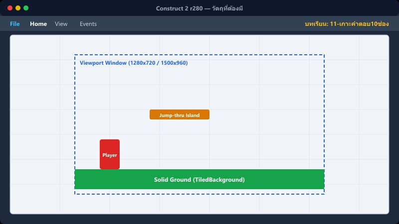
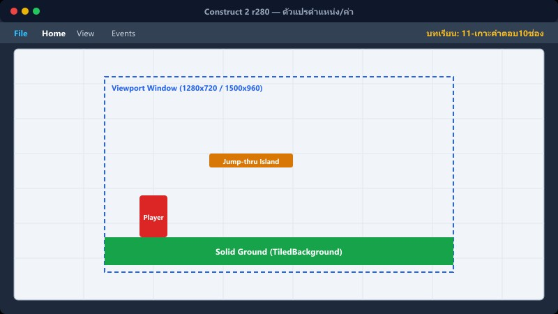
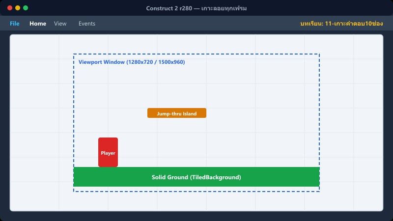

เป้าหมายบทนี้: สร้างจุดคำตอบ 10 จุดบนเกาะลอย พร้อมตัวเลข และกระจายคำตอบถูก+ลวง
วัตถุ→ค่าช่อง→Spawn 10→เกาะลอย
1วัตถุที่ต้องมี

Object types / Layout
answer_spawn จุดอ้างอิงวาง
answer_platform Jump-thru (เกาะลอย)
answer_orb ลูกแก้วที่ชนได้
answer_text1 … answer_text10 ตัวเลข
Instance vars: platform/orb มี ช่องคำตอบ · orb มี ค่าคำตอบ
2ตัวแปรตำแหน่ง/ค่า

ค่าช่อง1…ค่าช่อง10
จุดX1…จุดX10 · จุดY1…จุดY10
ตำแหน่งคำตอบถูก (1–10)
กลุ่ม: “2 ใส่คำตอบลงดาว 10 ดวง”
3ขั้นตอนเมื่อ เตรียมคำตอบ=1
- สุ่ม ตำแหน่งคำตอบถูก = int(random(1,11))
- ใส่คำตอบถูกในช่องนั้น · ที่เหลือใส่ค่าลวง/ตัวหลอกที่ไม่ซ้ำ
- Create answer_platform + answer_orb + ผูก text ตามช่อง
- Set ล็อกคำตอบ = 0 เมื่อพร้อม
4เกาะลอยทุกเฟรม

กลุ่ม “2.1 สุ่มการลอยของเกาะคำตอบ”
Every tick: ขยับ platform ตามรูปแบบการลอย
ให้ orb และ text ตามตำแหน่ง platform ของช่องเดียวกัน
platform ต้อง Jump-thru เพื่อยืนเก็บคำตอบได้
5ผิดพลาดที่พบบ่อย
ตัวเลขไม่ตามเกาะ → ลืม sync ทุก tick
กระโดดไม่ถึง → spawn สูงเกิน / ห่างเกิน (ดูกฎเกาะบท 2)
ชนแล้วค่าผิด → ช่องคำตอบของ orb ไม่ตรง text